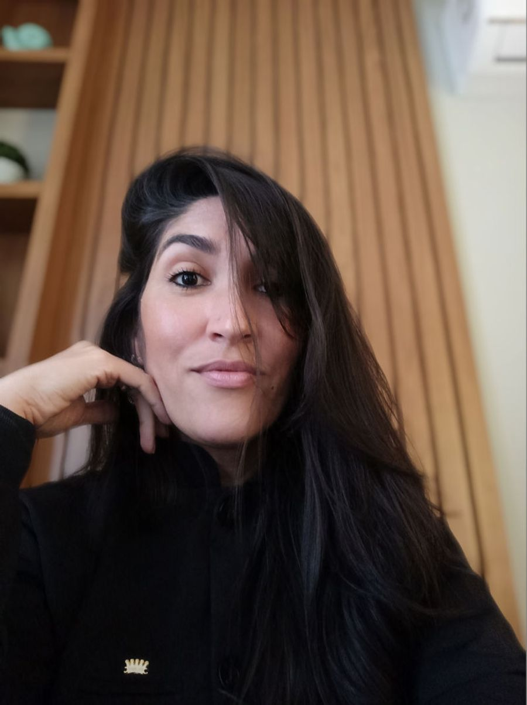
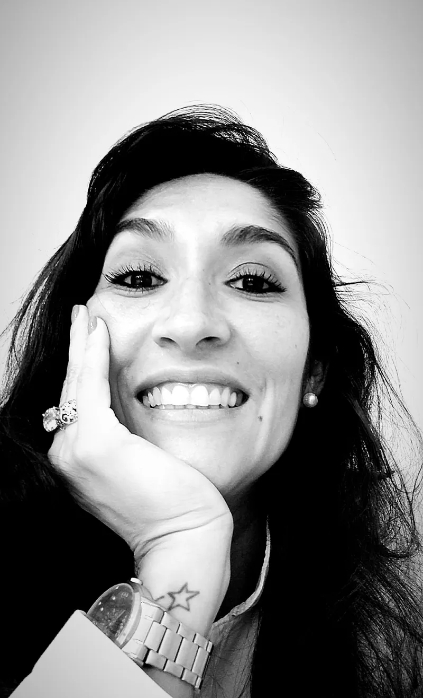
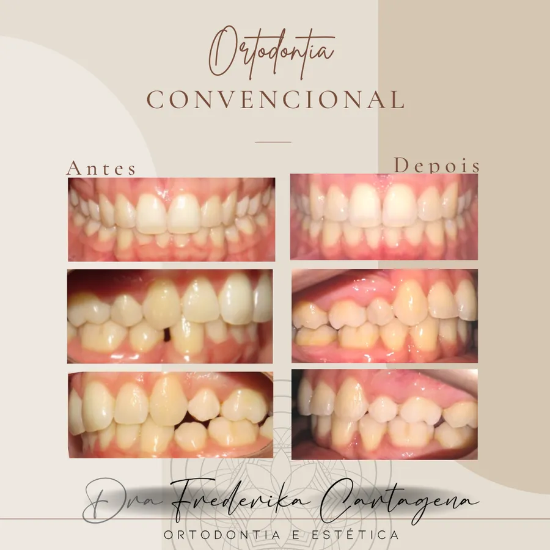
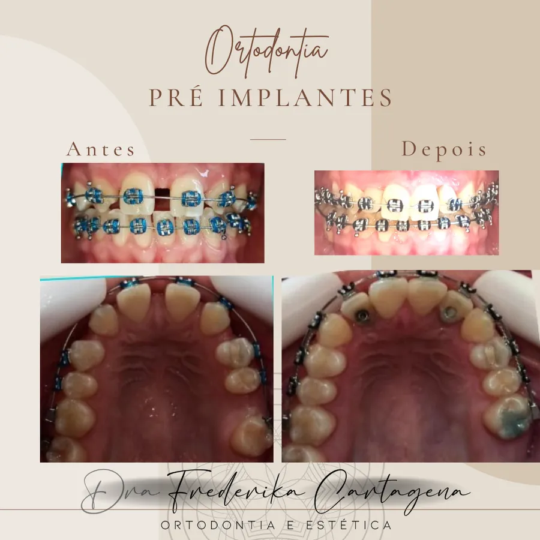
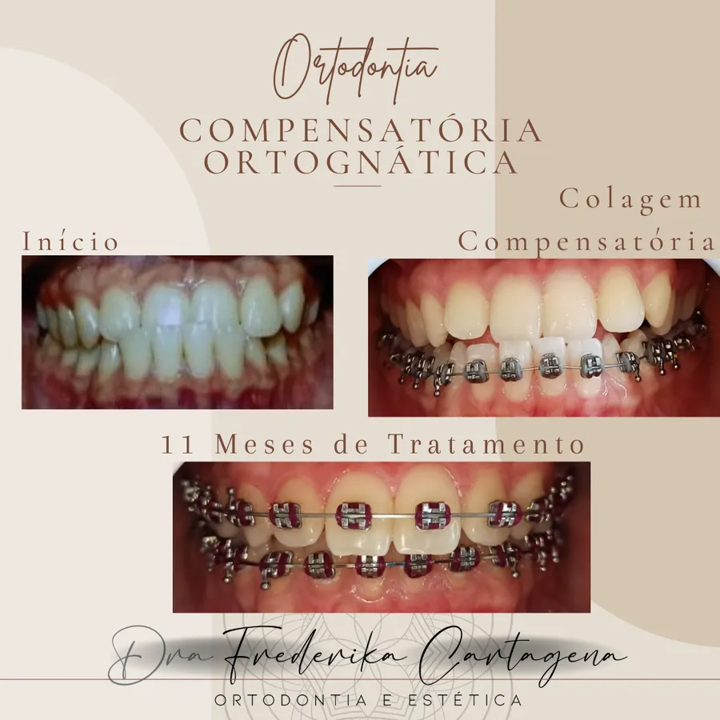

Ortodontia & Estética · Porto Seguro e Trancoso
Dra. Frederika Cartagena
Formada há 19 anos, especializada na área de Ortodontia. Atua na cidade de Porto Seguro há mais de 11 anos promovendo um atendimento humanizado, onde cada paciente é ouvido e tratado com individualidade.
- 19 anos de formada
- Especialista em Ortodontia
- CRO-BA 9812


Sobre mim
Acolhimento e ciência, lado a lado
Meu propósito é oferecer um atendimento diferenciado, gerando acolhimento ao paciente, aliado a uma prática clínica embasada em evidências científicas.
Entendo que para o sucesso de um tratamento odontológico é fundamental um vínculo de confiança entre o paciente e o profissional, baseado em comunicação simples e acolhimento.
- Nome
- Frederika Cartagena Machado
- CRO-BA
- 9812
- Graduação
- Universidade Federal da Paraíba — 2007
- Especialização
- Ortodontia — FUNORTE, Ilhéus-BA — 2016
- Curso
- Facetas em Resinas Compostas — Dr. Felipe Bezerra
Áreas de atuação
Tratamentos
-
Ortodontia
Ortodontia Convencional
Tratamentos com aparelhos fixos convencionais metálicos estéticos, em pacientes classe I, II e III em dentição mista e permanente.
Agendar avaliação -
Ortodontia
Ortodontia Pré-Implantes Dentários
Preparo de boca com Ortodontia para a recuperação de espaço com a finalidade da realização de implantes dentários e reabilitação protética.
Agendar avaliação -
Ortodontia
Ortodontia Pré-Ortognática e Compensatória
Preparo cirúrgico com ortodontia para cirurgia ortognática de pacientes classe II e III. E tratamento compensatório para pacientes com bom perfil facial.
Agendar avaliação -
Estética
Restaurações Estéticas
Correção de danos causados por cárie, desgaste e fratura, devolvendo ao dente seu aspecto natural.
Agendar avaliação -
Estética
Facetas em Resinas Compostas
Harmonização do sorriso com resina composta direta realizando modificações estéticas como alteração de cor, formato, preenchimento de espaços entre os dentes (diastemas).
Agendar avaliação -
Prevenção
Raspagem e Profilaxia
Prevenção de doenças bucais através da orientação em saúde bucal e manutenção da higiene oral.
Agendar avaliação -
Estética
Clareamento Dental
Realização de clareamento em consultório odontológico e clareamento caseiro com o uso de moldeiras.
Agendar avaliação
Portfólio
Casos tratados



Imagens publicadas com autorização por escrito dos pacientes (Resolução CFO-196/2019). Os resultados variam de pessoa para pessoa.
Minhas experiências
Trajetória
- Jun/2026 – hoje Atual
Figueiredo Odontologia
Porto Seguro — BA
- Mai/2024 – hoje Atual
Essence Odontologia Integrada
Trancoso — BA
- Jun/2022 – hoje Atual
Consultório Odontológico Dra. Simony de Almeida Barros
Porto Seguro — BA
- 2022 – hoje Atual
Instituto Reuter — Odontologia e Saúde Integrada
Porto Seguro — BA
Ortodontia e Restaurações Estéticas em Resina Composta.
- Ago/2022 – Mar/2024
Odonto Trancoso
Trancoso — BA
- 2014 – 2022
Clínica Odonto Moderna
Atendimento Clínico Geral e Ortodontia.
- 2014 – 2020
Consultório Dra. Danusa Brito
Itabuna — BA
Atendimento Clínico Geral e Ortodontia.
- 2011 – 2014
Clínica Sorriso Fresh
Itabuna — BA
Atendimento Clínico Geral e Ortodontia.
- 2008 – 2011
Consultório Ortomaster
Atendimento Clínico Geral.
Para atendimentos
Onde atendo
-
Consultório Odontológico Dra. Simony de Almeida Barros
Rua Manoel Fernandes Almeida, 60 — Centro, Porto Seguro — BA
Ver no mapa -
Instituto Reuter — Odontologia e Saúde Integrada
Av. dos Navegantes, nº 530 — Sala 02, 1º andar — Centro, Porto Seguro — BA
Ver no mapa -
Essence Odontologia Integrada
Rua Tancredo Neves, 66 — Trancoso, Porto Seguro — BA
Ver no mapa -
Figueiredo Odontologia
Rua 13 de Maio, 142 — Centro, Porto Seguro — BA
Ver no mapa
Vamos cuidar do seu sorriso?
Agende sua avaliação pelo WhatsApp. Respondo para combinar o melhor dia e local para você.
Agendar pelo WhatsApp · (73) 99110-8574